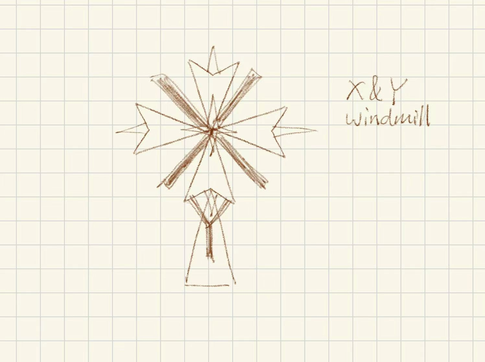

Drawing Mode:
Shape Color:
Red
Green
Blue
Shape Size:
(Circles) Segment Count:
My picture is a windmill with initials X and Y in the design.
My Original Sketch:

Picture: A triangle-built windmill that integrates my initials X and Y into the design.
Awesomeness: Rainbow Mode automatically cycles colors while drawing.